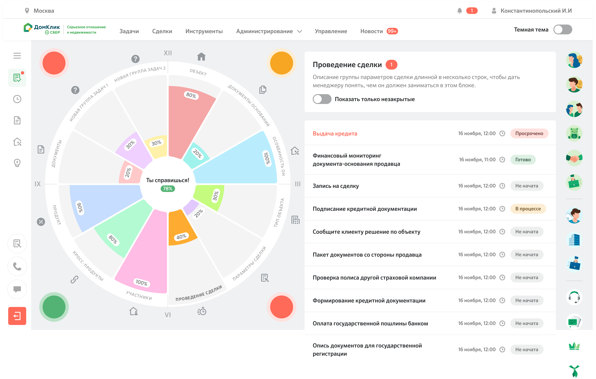

Гипотеза «чем дольше сотрудник ведёт одинаковые сделки, тем он в них опытнее» - и диаграмма навыков, которая проверила её на цифровой фабрике ипотеки.
Цифровая фабрика сделок проекта ДомКлик - современная инновационная оргструктура, которая должна автоматизировать выдачу ипотечных кредитов. Сотрудник банка работает за CRM и проводит все сделки с точки зрения документооборота, назначения встреч и распределения ресурсов.

Основная идея геймификации фабрики - оптимизация навыков сотрудника под особенности конкретной сделки. Продуктовая гипотеза: «чем дольше сотрудник ведёт одинаковые сделки, тем более он в них опытен», и использование предыдущего опыта поможет ускорить время одобрения и выдачи ипотеки. Эксперимент инициировало руководство Сбера на уровне вице-президента ДомКлик и разрабатывало итерациями - с согласованиями и юзабилити-тестированием.
Вторая цель - уменьшение выгорания сотрудников CRM: предполагалось, что метрика CSI, поставленная интерфейсу, отражает и снижение выгорания. Третья цель - «классическая» геймификация с ачивками и наградами на уровне отдела для роста личной эффективности.
Выездные сессии совместно с отделом дизайна и маркетинга для изучения практик работы сотрудников банка - с целью найти оперативные решения прямо на месте.
Сформулированы первые требования к прототипу, определена его форма в виде диаграммы сделки (пользователь нативно видит свойства сделки), проработаны фичи «Андон» (модель подсказок в форме светофора о проблемах в сделке) и «Предсказание» (индикатор сложности предстоящей сделки на основе опыта оператора).
Поставил задачи аналитикам и получил первые результаты: 78 свойств сделки, разделённых на 12 больших классов.
Тестирование на 20 респондентах с разным опытом работы на фабрике (настраивал статистические веса), плюс три глубинных интервью с опытными сотрудниками Сбера - чтобы выявить отношение к профессиональной специализации.
Новые сотрудники банка в основном ведут сделки с первичной недвижимостью - тестирование нового формата проводилось именно на них.
Скорость выдачи ипотеки выросла на 10% по сравнению с контрольной группой без диаграммы навыков. Метрика CSI сотрудников фабрики - субъективная удовлетворённость новой формой интерфейса - выросла на 0,4 процентных пункта. Эксперимент признан успешным и показал эвристическую эффективность направления. Следующим шагом могло стать внедрение классов сотрудников (файтер, маг, вор) с жёсткой специализацией по типу сделки.